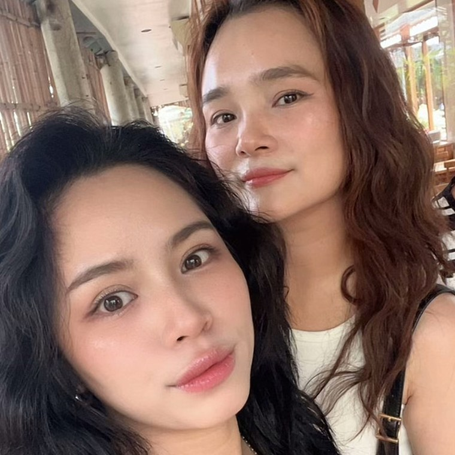

<meta name="description" content="Lịch trình bốn ngày ba đêm ở Okinawa, mùa hè 2026.">
<meta property="og:type" content="website">
<meta property="og:url" content="https://sunnynguyen-225.github.io/okinawa/">
<meta property="og:title" content="Hai Đứa Đi Okinawa">
<meta property="og:description" content="Lịch trình bốn ngày ba đêm ở Okinawa, mùa hè 2026.">
<meta property="og:image" content="https://sunnynguyen-225.github.io/okinawa/og-preview.png">
<meta property="og:image:width" content="1200">
<meta property="og:image:height" content="630">
<meta name="twitter:card" content="summary_large_image">
<meta name="twitter:title" content="Hai Đứa Đi Okinawa">
<meta name="twitter:description" content="Lịch trình bốn ngày ba đêm ở Okinawa, mùa hè 2026.">
<meta name="twitter:image" content="https://sunnynguyen-225.github.io/okinawa/og-preview.png">
<title>Hai Đứa Đi Okinawa</title>
<link rel="preconnect" href="https://fonts.googleapis.com">
<link rel="preconnect" href="https://fonts.gstatic.com" crossorigin>
<link rel="stylesheet" href="https://fonts.googleapis.com/css2?family=Baloo+2:wght@600;700;800&family=Quicksand:wght@500;600;700&display=swap">
<style>
:root{
  --ground:#FFFDF5;
  --ground-2:#FFF6E4;
  --surface:#FFFFFF;
  --surface-2:#F0FBFD;
  --ink:#27454F;
  --muted:#6E8A95;
  --line:rgba(39,69,79,0.13);
  --shadow:rgba(39,69,79,0.16);

  /* tone mùa hè: nắng, biển, hoa */
  --hibiscus:#FF5C8A;   --hibiscus-ink:#D91E60;  --hibiscus-soft:#FFE0EA;   /* hoa dâm bụt */
  --kouri:#00C4DE;      --kouri-ink:#00819B;     --kouri-soft:#D0F4FB;      /* biển Kouri */
  --mango:#FF8A2B;      --mango-ink:#D2600C;     --mango-soft:#FFE7CE;      /* xoài chín */
  --beniimo:#3D9DF2;    --beniimo-ink:#1565C0;   --beniimo-soft:#DAEDFF;    /* trời trưa */
  --mint:#20C9A0;       --mint-ink:#00866B;      --mint-soft:#CCF6EB;       /* nước cạn */
  --lemon:#FFCE2E;      --lemon-ink:#A87C00;     --lemon-soft:#FFF3C4;      /* nắng */

  --accent:var(--hibiscus-ink);
  --accent-pop:var(--hibiscus);
  --accent-soft:var(--hibiscus-soft);

  --display:'Baloo 2','Quicksand','Segoe UI',system-ui,sans-serif;
  --body:'Quicksand','Segoe UI',system-ui,sans-serif;
  --r-lg:26px;
  --r-md:18px;
}
*{box-sizing:border-box;}
html{scroll-behavior:smooth;}
body{
  margin:0;
  background:var(--ground);
  color:var(--ink);
  font-family:var(--body);
  font-weight:500;
  font-size:15.5px;
  line-height:1.6;
  -webkit-font-smoothing:antialiased;
}
:focus-visible{outline:3px solid var(--kouri);outline-offset:3px;border-radius:8px;}
.wrap{max-width:760px;margin:0 auto;padding-inline:18px;}

/* ---------- Hero ---------- */
.hero{
  position:relative;
  background:
    radial-gradient(65% 55% at 6% 2%, var(--lemon-soft), transparent 62%),
    radial-gradient(70% 60% at 98% 0%, var(--hibiscus-soft), transparent 60%),
    radial-gradient(120% 62% at 50% 96%, var(--kouri-soft), transparent 72%),
    linear-gradient(168deg, var(--beniimo-soft) 0%, var(--ground) 78%);
  padding-block:44px 10px;
  overflow:hidden;
}
.hero .wrap{position:relative;z-index:2;}
.eyebrow{
  display:inline-flex;align-items:center;gap:7px;
  background:var(--surface);
  border:2px solid var(--hibiscus);
  color:var(--hibiscus-ink);
  font-weight:700;font-size:12px;letter-spacing:.08em;text-transform:uppercase;
  padding:6px 14px;border-radius:99px;
  box-shadow:0 3px 0 color-mix(in srgb,var(--hibiscus) 40%,transparent);
}
.hero h1{
  font-family:var(--display);
  font-weight:800;
  font-size:clamp(36px,10vw,58px);
  line-height:1.03;
  letter-spacing:-0.015em;
  margin:16px 0 6px;
  text-wrap:balance;
}
.hero h1 .pop{
  background:linear-gradient(92deg,var(--hibiscus-ink),var(--beniimo-ink) 55%,var(--kouri-ink));
  -webkit-background-clip:text;background-clip:text;
  color:transparent;
}
.hero .sub{
  margin:0 0 20px;
  color:var(--muted);
  font-size:16px;
  font-weight:600;
}
.chips{display:flex;flex-wrap:wrap;gap:9px;}
.chip{
  display:inline-flex;align-items:center;gap:8px;
  background:var(--surface);
  border:2px solid var(--c,var(--kouri));
  color:var(--ci,var(--kouri-ink));
  border-radius:99px;
  padding:8px 15px;
  font-size:13.5px;font-weight:700;
  box-shadow:0 3px 0 color-mix(in srgb,var(--c,var(--kouri)) 40%,transparent);
}
.chip:nth-child(1){--c:var(--mint);--ci:var(--mint-ink);}
.chip:nth-child(2){--c:var(--kouri);--ci:var(--kouri-ink);}
.chip:nth-child(3){--c:var(--mango);--ci:var(--mango-ink);}
.countdown{
  margin-top:22px;
  display:inline-flex;align-items:center;gap:12px;
  background:var(--surface);
  border:2.5px dashed var(--hibiscus);
  border-radius:var(--r-md);
  padding:12px 18px;
  box-shadow:0 4px 0 color-mix(in srgb,var(--hibiscus) 38%,transparent);
}
.countdown .big{
  font-family:var(--display);font-weight:800;
  font-size:32px;line-height:1;color:var(--hibiscus-ink);
  font-variant-numeric:tabular-nums;
}
.countdown .lbl{font-size:13px;font-weight:700;color:var(--muted);line-height:1.35;}

/* ---------- Ảnh sticker viền trắng ---------- */
.hero-grid{display:flex;flex-wrap:wrap;align-items:flex-end;gap:10px 20px;}
.hero-text{flex:1 1 250px;min-width:0;}
.photo{
  flex:0 0 auto;margin-left:auto;position:relative;
  width:clamp(132px,31vw,190px);
  transform:rotate(-3deg);
}
.photo .frame{
  position:relative;aspect-ratio:1;overflow:hidden;
  border-radius:50%;
  border:7px solid #fff;
  background:var(--surface-2);
  box-shadow:
    0 0 0 3.5px var(--hibiscus),
    0 9px 0 color-mix(in srgb,var(--hibiscus) 32%,transparent),
    0 14px 26px rgba(39,69,79,0.18);
}
.photo img{
  display:block;width:100%;height:100%;
  object-fit:cover;object-position:50% 46%;
}
.photo .pin{
  position:absolute;top:-14px;right:-6px;
  font-size:30px;transform:rotate(16deg);
  filter:drop-shadow(0 2px 2px rgba(39,69,79,0.2));
}
.photo.sway{animation:sway 6s ease-in-out infinite;}
@keyframes sway{0%,100%{transform:rotate(-3deg) translateY(0);}50%{transform:rotate(2deg) translateY(-7px);}}
.photo-foot{
  width:120px;margin:0 auto 12px;transform:rotate(2deg);
}
.photo-foot .frame{border-width:6px;box-shadow:0 0 0 3px var(--kouri),0 7px 0 color-mix(in srgb,var(--kouri) 30%,transparent);}
.paw{color:var(--hibiscus-ink);opacity:.85;letter-spacing:6px;}

.sticker{
  position:absolute;font-size:40px;opacity:.9;z-index:1;
  animation:bob 5s ease-in-out infinite;
  pointer-events:none;user-select:none;
}
.s1{top:18px;right:5%;font-size:26px;}
.s2{top:150px;right:3%;font-size:22px;animation-delay:-1.6s;}
.s3{top:74px;right:12%;font-size:20px;animation-delay:-3.1s;}
@keyframes bob{0%,100%{transform:translateY(0) rotate(-4deg);}50%{transform:translateY(-10px) rotate(5deg);}}
@media (prefers-reduced-motion:reduce){.sticker,.photo.sway{animation:none;}}
.wave{display:block;width:100%;height:38px;color:var(--ground);margin-top:12px;}

/* ---------- Tab kiểu app ---------- */
[hidden]{display:none !important;}
.daynav{
  position:sticky;top:0;z-index:30;
  background:color-mix(in srgb, var(--ground) 92%, transparent);
  backdrop-filter:blur(10px);
  border-bottom:2px solid var(--line);
}
.daynav-inner{
  display:flex;gap:8px;overflow-x:auto;
  padding:11px 18px 13px;
  -webkit-overflow-scrolling:touch;
  scrollbar-width:none;
}
.daynav-inner::-webkit-scrollbar{display:none;}
.tab{
  flex:0 0 auto;white-space:nowrap;cursor:pointer;
  font-family:var(--body);font-size:13px;font-weight:700;
  padding:8px 15px;border-radius:99px;
  background:var(--nb,var(--kouri-soft));
  color:var(--nc,var(--kouri-ink));
  border:2px solid transparent;
  transition:transform .14s ease, box-shadow .14s ease;
}
.tab:nth-child(1){--nb:var(--mint-soft);--nc:var(--mint-ink);--np:var(--mint);}
.tab:nth-child(2){--nb:var(--hibiscus-soft);--nc:var(--hibiscus-ink);--np:var(--hibiscus);}
.tab:nth-child(3){--nb:var(--kouri-soft);--nc:var(--kouri-ink);--np:var(--kouri);}
.tab:nth-child(4){--nb:var(--mango-soft);--nc:var(--mango-ink);--np:var(--mango);}
.tab:nth-child(5){--nb:var(--beniimo-soft);--nc:var(--beniimo-ink);--np:var(--beniimo);}
.tab:nth-child(6){--nb:var(--mint-soft);--nc:var(--mint-ink);--np:var(--mint);}
.tab:hover{transform:translateY(-1px);}
.tab[aria-selected="true"]{
  background:var(--np);
  color:#fff;
  box-shadow:0 4px 0 color-mix(in srgb,var(--np) 45%,transparent);
  transform:translateY(-1px);
}
.panel{animation:pop .28s ease both;}
@keyframes pop{from{opacity:0;transform:translateY(8px);}to{opacity:1;transform:none;}}
@media (prefers-reduced-motion:reduce){.panel{animation:none;}}

/* ---------- Section heads ---------- */
section{padding-block:34px;}
.head{margin-bottom:18px;}
.kicker{
  font-size:12px;font-weight:700;letter-spacing:.1em;text-transform:uppercase;
  color:var(--accent);margin:0 0 4px;
}
.head h2{
  font-family:var(--display);font-weight:800;
  font-size:clamp(24px,5.6vw,31px);margin:0;letter-spacing:-0.01em;
}

/* ---------- Boarding pass ---------- */
.pass{
  background:var(--surface);
  border:2.5px solid var(--kouri);
  border-radius:var(--r-lg);
  box-shadow:0 6px 0 color-mix(in srgb,var(--kouri) 45%,transparent);
  overflow:hidden;
  margin-bottom:18px;
}
.pass-top{
  background:linear-gradient(100deg,var(--kouri-soft),var(--lemon-soft) 55%,var(--mint-soft));
  padding:14px 20px;
  display:flex;align-items:center;justify-content:space-between;gap:10px;
  font-weight:700;font-size:13px;
  color:var(--kouri-ink);
  border-bottom:2.5px dashed var(--kouri);
}
.pass-top .tail{color:var(--mint-ink);letter-spacing:.08em;}
.leg{display:flex;align-items:center;justify-content:space-between;gap:14px;padding:16px 20px;flex-wrap:wrap;}
.leg + .leg{border-top:2.5px dashed color-mix(in srgb,var(--kouri) 55%,transparent);}
.leg .route{font-family:var(--display);font-weight:700;font-size:20px;line-height:1.2;}
.leg .when{color:var(--muted);font-size:13.5px;font-weight:600;font-variant-numeric:tabular-nums;}
.leg .tag{
  background:var(--mint-soft);color:var(--mint-ink);
  font-size:12px;font-weight:700;padding:5px 12px;border-radius:99px;white-space:nowrap;
  border:2px solid var(--mint);
}
.hotel{
  display:flex;gap:15px;align-items:center;
  background:var(--surface);
  border:2.5px solid var(--beniimo);
  border-radius:var(--r-lg);
  box-shadow:0 6px 0 color-mix(in srgb,var(--beniimo) 42%,transparent);
  padding:16px 18px;
}
.hotel .tile{
  flex:0 0 auto;width:64px;height:64px;border-radius:20px;
  background:linear-gradient(150deg,var(--beniimo-soft),var(--hibiscus-soft));
  display:grid;place-items:center;font-size:30px;
}
.hotel h3{font-family:var(--display);font-weight:700;font-size:17px;margin:0 0 2px;}
.hotel .addr{margin:0 0 7px;font-size:12.5px;color:var(--muted);font-weight:600;}
.tiny-note{
  display:inline-block;font-size:12px;font-weight:700;
  color:var(--mango-ink);background:var(--mango-soft);
  padding:4px 11px;border-radius:99px;
  border:2px solid var(--mango);
}

/* ---------- Day cards ---------- */
.day{scroll-margin-top:64px;}
.daycard{
  background:var(--surface);
  border:2.5px solid var(--accent-pop);
  border-radius:var(--r-lg);
  box-shadow:0 7px 0 color-mix(in srgb,var(--accent-pop) 45%,transparent);
  overflow:hidden;
}
.daycard.pink{--accent:var(--hibiscus-ink);--accent-pop:var(--hibiscus);--accent-soft:var(--hibiscus-soft);--accent-2:var(--lemon-soft);}
.daycard.blue{--accent:var(--kouri-ink);--accent-pop:var(--kouri);--accent-soft:var(--kouri-soft);--accent-2:var(--mint-soft);}
.daycard.sun{--accent:var(--mango-ink);--accent-pop:var(--mango);--accent-soft:var(--mango-soft);--accent-2:var(--lemon-soft);}
.daycard.plum{--accent:var(--beniimo-ink);--accent-pop:var(--beniimo);--accent-soft:var(--beniimo-soft);--accent-2:var(--hibiscus-soft);}
.dayhead{
  background:linear-gradient(105deg,var(--accent-soft),var(--accent-2,var(--accent-soft)));
  padding:18px 20px;
  display:flex;align-items:center;gap:14px;
  border-bottom:2.5px solid var(--accent-pop);
}
.daybadge{
  flex:0 0 auto;width:52px;height:52px;border-radius:18px;
  background:var(--surface);
  border:2.5px solid var(--accent-pop);
  display:grid;place-items:center;text-align:center;line-height:1;
  box-shadow:0 3px 0 color-mix(in srgb,var(--accent-pop) 45%,transparent);
}
.daybadge .n{font-family:var(--display);font-weight:800;font-size:21px;color:var(--accent);}
.daybadge .d{font-size:9.5px;font-weight:700;letter-spacing:.08em;color:var(--muted);margin-top:2px;}
.dayhead .meta{font-size:12.5px;font-weight:700;color:var(--accent);}
.dayhead h3{font-family:var(--display);font-weight:800;font-size:21px;margin:1px 0 0;letter-spacing:-0.01em;}
.daybody{padding:20px;}

/* ---------- Timeline ---------- */
.tl{position:relative;padding-left:46px;display:flex;flex-direction:column;gap:16px;}
.tl::before{
  content:"";position:absolute;left:17px;top:14px;bottom:14px;
  border-left:3px dotted var(--accent-pop);
}
.stop{position:relative;}
.stop .dot{
  position:absolute;left:-46px;top:0;
  width:36px;height:36px;border-radius:50%;
  background:var(--surface);
  border:2.5px solid var(--accent-pop);
  display:grid;place-items:center;font-size:17px;
  box-shadow:0 3px 0 color-mix(in srgb,var(--accent-pop) 45%,transparent);
}
.stop .time{
  display:inline-block;
  font-size:11.5px;font-weight:700;letter-spacing:.03em;
  color:var(--accent);background:var(--accent-soft);
  padding:3px 10px;border-radius:99px;margin-bottom:5px;
  font-variant-numeric:tabular-nums;
}
.stop h4{font-family:var(--display);font-weight:700;font-size:16.5px;margin:0 0 3px;line-height:1.3;}
.stop p{margin:0;font-size:14px;color:var(--muted);font-weight:500;line-height:1.62;}
.stop p b{color:var(--ink);font-weight:700;}

.note{
  margin-top:18px;
  background:var(--surface-2);
  border:2px solid var(--accent-pop);
  border-radius:var(--r-md);
  padding:14px 16px;
  font-size:13.5px;color:var(--muted);font-weight:600;line-height:1.6;
}
.note b{color:var(--ink);}
.note + .note{margin-top:10px;}

/* ---------- Địa chỉ + link bản đồ ---------- */
.stop .map, .hotel .map, .cafe .map{
  display:inline-flex;align-items:flex-start;gap:7px;
  margin-top:8px;
  max-width:100%;
  font-size:12.5px;font-weight:700;line-height:1.45;
  color:var(--accent,var(--kouri-ink));
  background:var(--accent-soft,var(--kouri-soft));
  border:2px solid color-mix(in srgb, var(--accent-pop,var(--kouri)) 60%, transparent);
  border-radius:14px;
  padding:7px 12px;
  text-decoration:none;
  transition:transform .14s ease, box-shadow .14s ease;
}
.stop .map:hover, .hotel .map:hover, .cafe .map:hover{
  transform:translateY(-1px);
  box-shadow:0 3px 0 color-mix(in srgb, var(--accent-pop,var(--kouri)) 45%, transparent);
}
.map .pinico{flex:0 0 auto;font-size:13px;line-height:1.35;}
.map .jp{font-weight:600;word-break:break-word;}
.map .approx{display:block;font-weight:700;opacity:.75;font-size:11.5px;margin-top:1px;}
.hotel .map{--accent:var(--beniimo-ink);--accent-soft:var(--beniimo-soft);--accent-pop:var(--beniimo);margin-top:0;margin-bottom:8px;}

/* ---------- Quán cà phê / trà Nhật ---------- */
.cafelist{display:flex;flex-direction:column;gap:17px;}
.cafe{
  background:var(--surface);
  border:2.5px solid var(--cc);
  border-radius:var(--r-lg);
  box-shadow:0 6px 0 color-mix(in srgb, var(--cc) 42%, transparent);
  overflow:hidden;
}
.cafe.c-mint{--cc:var(--mint);--cci:var(--mint-ink);--ccs:var(--mint-soft);}
.cafe.c-pink{--cc:var(--hibiscus);--cci:var(--hibiscus-ink);--ccs:var(--hibiscus-soft);}
.cafe.c-sea{--cc:var(--kouri);--cci:var(--kouri-ink);--ccs:var(--kouri-soft);}
.cafe.c-sun{--cc:var(--mango);--cci:var(--mango-ink);--ccs:var(--mango-soft);}
.cafe.c-sky{--cc:var(--beniimo);--cci:var(--beniimo-ink);--ccs:var(--beniimo-soft);}
.cafe-top{
  display:flex;gap:13px;align-items:center;
  padding:14px 17px;
  background:linear-gradient(100deg, var(--ccs), color-mix(in srgb, var(--ccs) 45%, var(--lemon-soft)));
  border-bottom:2.5px dashed var(--cc);
}
.cafe-emoji{
  flex:0 0 auto;width:46px;height:46px;border-radius:16px;
  background:var(--surface);border:2.5px solid var(--cc);
  display:grid;place-items:center;font-size:22px;
  box-shadow:0 3px 0 color-mix(in srgb, var(--cc) 42%, transparent);
}
.cafe-top h3{font-family:var(--display);font-weight:800;font-size:17px;margin:0;line-height:1.25;}
.cafe-top .jpname{display:block;font-size:11.5px;font-weight:700;color:var(--cci);margin-top:2px;letter-spacing:.02em;}
.cafe-body{padding:15px 17px 17px;}
.cafe-body p{margin:0 0 10px;font-size:14px;color:var(--muted);font-weight:500;line-height:1.62;}
.cafe-body p b{color:var(--ink);font-weight:700;}
.facts{display:flex;flex-wrap:wrap;gap:7px;margin-bottom:11px;}
.fact{
  font-size:11.5px;font-weight:700;padding:4px 11px;border-radius:99px;
  background:var(--ccs);color:var(--cci);
  border:2px solid color-mix(in srgb, var(--cc) 55%, transparent);
}
.fact.warn{background:var(--hibiscus-soft);color:var(--hibiscus-ink);border-color:var(--hibiscus);}
.cafe .map{--accent:var(--cci);--accent-soft:var(--ccs);--accent-pop:var(--cc);margin-top:2px;}
.cafe-note{
  margin-top:18px;
  background:var(--surface-2);
  border:2px solid var(--mint);
  border-radius:var(--r-md);
  padding:14px 16px;
  font-size:13.5px;color:var(--muted);font-weight:600;line-height:1.65;
}
.cafe-note b{color:var(--ink);}
.cafe-note + .cafe-note{margin-top:10px;}

/* ---------- Khối "ăn gì" ---------- */
.eatbox{
  margin-top:18px;
  background:var(--surface);
  border:2.5px solid var(--accent-pop);
  border-radius:var(--r-lg);
  box-shadow:0 6px 0 color-mix(in srgb, var(--accent-pop) 42%, transparent);
  overflow:hidden;
}
.eathead{
  display:flex;align-items:center;gap:11px;
  padding:13px 17px;
  background:linear-gradient(100deg, var(--accent-soft), var(--accent-2, var(--lemon-soft)));
  border-bottom:2.5px solid var(--accent-pop);
}
.eathead .ic{
  flex:0 0 auto;width:40px;height:40px;border-radius:14px;
  background:var(--surface);border:2.5px solid var(--accent-pop);
  display:grid;place-items:center;font-size:20px;
}
.eathead h4{font-family:var(--display);font-weight:800;font-size:17px;margin:0;line-height:1.2;}
.eathead .eatsub{display:block;font-size:11.5px;font-weight:700;color:var(--accent);margin-top:1px;}
.eatgroup{padding:15px 17px;}
.eatgroup + .eatgroup{border-top:2.5px dashed color-mix(in srgb, var(--accent-pop) 55%, transparent);}
.eatgroup h5{
  font-family:var(--display);font-weight:800;font-size:14.5px;
  margin:0 0 10px;color:var(--accent);letter-spacing:.01em;
}
.dish{
  background:var(--ground-2);
  border:2px solid color-mix(in srgb, var(--accent-pop) 45%, transparent);
  border-radius:var(--r-md);
  padding:12px 14px;
}
.dish + .dish{margin-top:10px;}
.dish .dname{font-family:var(--display);font-weight:700;font-size:15px;line-height:1.3;margin:0 0 1px;}
.dish .djp{display:block;font-size:11.5px;font-weight:700;color:var(--accent);margin-bottom:6px;}
.dish p{margin:0;font-size:13.5px;color:var(--muted);font-weight:500;line-height:1.6;}
.dish p b{color:var(--ink);font-weight:700;}
.dish .map{margin-top:9px;}
.menulist{list-style:none;margin:0;padding:0;display:flex;flex-direction:column;gap:9px;}
.menulist li{
  display:flex;gap:10px;align-items:flex-start;
  font-size:13.5px;color:var(--muted);font-weight:500;line-height:1.55;
}
.menulist li .mi{flex:0 0 auto;font-size:15px;line-height:1.35;}
.menulist li b{color:var(--ink);font-weight:700;}
.menulist li .ja{font-weight:700;color:var(--accent);font-size:12.5px;}
.heads-up{
  margin-top:11px;
  background:var(--hibiscus-soft);
  border:2px solid var(--hibiscus);
  border-radius:var(--r-md);
  padding:11px 13px;
  font-size:13px;font-weight:600;color:var(--hibiscus-ink);line-height:1.55;
}
.heads-up b{font-weight:800;}

/* ---------- Footer ---------- */
footer{
  text-align:center;padding:34px 18px 54px;
  font-size:12.5px;font-weight:600;color:var(--muted);
  background:linear-gradient(180deg,transparent,var(--lemon-soft));
}
footer .hearts{font-size:20px;letter-spacing:4px;display:block;margin-bottom:8px;}

@media (max-width:430px){
  .s2{display:none;}
}
</style>

<header class="hero">
  <span class="sticker s1" aria-hidden="true">🐚</span>
  <span class="sticker s2" aria-hidden="true">🐠</span>
  <span class="sticker s3" aria-hidden="true">🌴</span>
  <div class="wrap hero-grid">
    <div class="hero-text">
    <span class="eyebrow">🏝️ Du lịch công ty · Okinawa</span>
    <h1>Bốn ngày ba đêm<br><span class="pop">ở Okinawa</span></h1>
    <p class="sub">Lịch trình nhỏ xinh của riêng tôi · 2026</p>
    <div class="chips">
      <span class="chip">📅 19/9 → 22/9</span>
      <span class="chip">✈️ FD230 / FD231</span>
      <span class="chip">🏨 Naha Kokusai-dori</span>
    </div>
    <div class="countdown">
      <span class="big" id="cd-num">5</span>
      <span class="lbl" id="cd-txt">ngày nữa<br>là được đi rồi!</span>
    </div>
    </div>
    <div class="photo sway">
      <div class="frame"></div>
      <span class="pin" aria-hidden="true">🌺</span>
    </div>
  </div>
  <svg class="wave" viewBox="0 0 1200 40" preserveAspectRatio="none" aria-hidden="true">
    <path fill="currentColor" d="M0,22 C150,44 250,2 400,20 C550,38 650,4 800,20 C950,36 1060,8 1200,22 L1200,40 L0,40 Z"></path>
  </svg>
</header>

<nav class="daynav">
  <div class="daynav-inner" role="tablist" aria-label="Các phần của chuyến đi">
    <button class="tab" type="button" role="tab" id="tab-flights" aria-controls="flights" aria-selected="true">✈️ Chuyến bay</button>
    <button class="tab" type="button" role="tab" id="tab-d1" aria-controls="d1" aria-selected="false">🌺 Ngày 1</button>
    <button class="tab" type="button" role="tab" id="tab-d2" aria-controls="d2" aria-selected="false">🚗 Ngày 2</button>
    <button class="tab" type="button" role="tab" id="tab-d3" aria-controls="d3" aria-selected="false">🐋 Ngày 3</button>
    <button class="tab" type="button" role="tab" id="tab-d4" aria-controls="d4" aria-selected="false">🧳 Ngày 4</button>
    <button class="tab" type="button" role="tab" id="tab-cafe" aria-controls="cafe" aria-selected="false">🍵 Cà phê matcha</button>
  </div>
</nav>

<section id="flights" class="wrap panel" role="tabpanel" aria-labelledby="tab-flights">
  <div class="head">
    <p class="kicker">Vé máy bay &amp; chỗ ở</p>
    <h2>Bay đi, bay về ✈️</h2>
  </div>

  <div class="pass">
    <div class="pass-top">
      <span>🎫 BOARDING PASS</span>
      <span class="tail">AIR ASIA · 20KG</span>
    </div>
    <div class="leg">
      <div>
        <div class="route">Đào Viên → Naha</div>
        <div class="when">FD230 · Thứ Bảy 19/9 · 13:30 → 15:55</div>
      </div>
      <span class="tag">Ký gửi 20kg</span>
    </div>
    <div class="leg">
      <div>
        <div class="route">Naha → Đào Viên</div>
        <div class="when">FD231 · Thứ Ba 22/9 · cất cánh 16:55</div>
      </div>
      <span class="tag">Ký gửi 20kg</span>
    </div>
  </div>

  <div class="hotel">
    <div class="tile" aria-hidden="true">🏨</div>
    <div>
      <h3>HOTEL LANTANA Naha Kokusai-dori</h3>
      <p class="addr">〒900-0014 沖縄県那覇市松尾2丁目8-1</p>
      <a class="map" href="https://www.google.com/maps/search/?api=1&amp;query=HOTEL%20LANTANA%20Naha%20Kokusai%20dori" target="_blank" rel="noopener"><span class="pinico" aria-hidden="true">📍</span><span class="jp">Mở bản đồ · 松尾2-8-1, Naha</span></a><br>
      <span class="tiny-note">🍳 Bao gồm ăn sáng × 3 ngày</span>
    </div>
  </div>
</section>

<section id="d1" class="day wrap panel" role="tabpanel" aria-labelledby="tab-d1" hidden>
  <div class="daycard pink">
    <div class="dayhead">
      <div class="daybadge"><span class="n">1</span><span class="d">19/9</span></div>
      <div>
        <div class="meta">Thứ Bảy</div>
        <h3>Ngày đến 🌺</h3>
      </div>
    </div>
    <div class="daybody">
      <div class="tl">
        <div class="stop">
          <div class="dot" aria-hidden="true">✈️</div>
          <span class="time">13:30 → 15:55</span>
          <h4>FD230 hạ cánh Naha</h4>
          <p>Cất cánh từ Đào Viên, Terminal 1. Có mặt làm thủ tục trước 11:00 (2.5 tiếng trước giờ bay).</p>
          <a class="map" href="https://www.google.com/maps/search/?api=1&amp;query=%E9%82%A3%E8%A6%87%E7%A9%BA%E6%B8%AF" target="_blank" rel="noopener"><span class="pinico" aria-hidden="true">📍</span><span class="jp">〒901-0142 沖縄県那覇市鏡水150 · Sân bay Naha (那覇空港)</span></a>
        </div>
        <div class="stop">
          <div class="dot" aria-hidden="true">🚝</div>
          <span class="time">Sau khi đến</span>
          <h4>Sân bay → khách sạn</h4>
          <p>Đi Yui Rail (đơn quỹ đạo) từ ga Naha Airport đến ga Asahibashi, sau đó đi bộ khoảng 10 phút tới khách sạn.</p>
          <a class="map" href="https://www.google.com/maps/search/?api=1&amp;query=%E6%97%AD%E6%A9%8B%E9%A7%85%20%E6%B2%96%E7%B8%84" target="_blank" rel="noopener"><span class="pinico" aria-hidden="true">📍</span><span class="jp">Ga Asahibashi 旭橋駅 · 沖縄県那覇市泉崎1丁目</span></a>
        </div>
        <div class="stop">
          <div class="dot" aria-hidden="true">🔑</div>
          <span class="time">15:00~</span>
          <h4>Check-in khách sạn</h4>
          <p>HOTEL LANTANA Naha Kokusai-dori. Tự check-in vào thời gian thuận tiện, không cần tập trung chung.</p>
          <a class="map" href="https://www.google.com/maps/search/?api=1&amp;query=HOTEL%20LANTANA%20Naha%20Kokusai%20dori" target="_blank" rel="noopener"><span class="pinico" aria-hidden="true">📍</span><span class="jp">〒900-0014 沖縄県那覇市松尾2-8-1</span></a>
        </div>
        <div class="stop">
          <div class="dot" aria-hidden="true">⛩️</div>
          <span class="time">~16:00</span>
          <h4>Đền Naminoue (波上宮)</h4>
          <p>Ngôi đền đứng đầu trong "Ryukyu Hassha" (8 đền quan trọng nhất vương quốc Ryukyu xưa) — xây trên vách đá san hô, view ngay ra biển. Ngay cạnh có bãi biển Naminoue nhỏ, đi dạo ngắm hoàng hôn rất hợp lúc chiều muộn. Cách khách sạn khoảng 1.5km — đi bộ ~20 phút hoặc taxi 5–7 phút. Tham quan tầm 45 phút–1 tiếng là đủ, còn kịp về thay đồ trước giờ ăn tối.</p>
          <a class="map" href="https://www.google.com/maps/search/?api=1&amp;query=%E6%B3%A2%E4%B8%8A%E5%AE%AE" target="_blank" rel="noopener"><span class="pinico" aria-hidden="true">📍</span><span class="jp">〒900-0031 沖縄県那覇市若狭1-25-11</span></a>
        </div>
        <div class="stop">
          <div class="dot" aria-hidden="true">🍶</div>
          <span class="time">19:00</span>
          <h4>Ăn tối izakaya cùng đoàn</h4>
          <p>島唄 Live 屋台村 Ashibina — có nhạc sống trực tiếp + 2 tiếng uống thả ga.</p>
          <a class="map" href="https://www.google.com/maps/search/?api=1&amp;query=%E5%B3%B6%E5%94%84%E3%83%A9%E3%82%A4%E3%83%96%20%E5%B1%8B%E5%8F%B0%E6%9D%91%E3%81%82%E3%81%97%E3%81%B3%E3%81%AA%E3%83%BC%20%E9%82%A3%E8%A6%87" target="_blank" rel="noopener"><span class="pinico" aria-hidden="true">📍</span><span class="jp">沖縄県那覇市牧志3丁目 · khu 国際通り屋台村<span class="approx">Địa chỉ khu phố — bấm để mở đúng quán trên Maps</span></span></a>
        </div>
      </div>
    </div>
  </div>
</section>

<section id="d2" class="day wrap panel" role="tabpanel" aria-labelledby="tab-d2" hidden>
  <div class="daycard blue">
    <div class="dayhead">
      <div class="daybadge"><span class="n">2</span><span class="d">20/9</span></div>
      <div>
        <div class="meta">Chủ Nhật · ngày tự do</div>
        <h3>Shuri &amp; Umikaji 🚗</h3>
      </div>
    </div>
    <div class="daybody">
      <div class="tl">
        <div class="stop">
          <div class="dot" aria-hidden="true">🏯</div>
          <span class="time">09:00</span>
          <h4>Lâu đài Shuri</h4>
          <p>Xuất phát sớm để đỡ đông — biểu tượng lịch sử vương quốc Ryukyu, cổng thành đỏ son đặc trưng. Tham quan khoảng 1–1.5 tiếng. Cách Naha ~15 phút lái xe.</p>
          <a class="map" href="https://www.google.com/maps/search/?api=1&amp;query=%E9%A6%96%E9%87%8C%E5%9F%8E%E5%85%AC%E5%9C%92" target="_blank" rel="noopener"><span class="pinico" aria-hidden="true">📍</span><span class="jp">〒903-0815 沖縄県那覇市首里金城町1-2</span></a>
        </div>
        <div class="stop">
          <div class="dot" aria-hidden="true">🍽️</div>
          <span class="time">11:00</span>
          <h4>Ăn trưa tự túc</h4>
          <p>Khu quanh Shuri hoặc quay lại phía Naha — nhiều lựa chọn cơm trưa nhẹ trước khi đi tiếp buổi chiều.</p>
        </div>
        <div class="stop">
          <div class="dot" aria-hidden="true">🦇</div>
          <span class="time">13:30 · tùy chọn</span>
          <h4>Động Gyokusendo (khá xa)</h4>
          <p>Hang thạch nhũ dài 5km, một trong những hang lớn nhất Nhật Bản — nhưng cách Naha khoảng 1 tiếng lái xe mỗi chiều, nên cân nhắc bỏ qua nếu muốn thong thả hơn buổi chiều.</p>
          <a class="map" href="https://www.google.com/maps/search/?api=1&amp;query=%E7%8E%89%E6%B3%89%E6%B4%9E%20%E3%81%8A%E3%81%8D%E3%81%AA%E3%82%8F%E3%83%AF%E3%83%BC%E3%83%AB%E3%83%89" target="_blank" rel="noopener"><span class="pinico" aria-hidden="true">📍</span><span class="jp">〒901-0616 沖縄県南城市玉城前川1336 · trong Okinawa World</span></a>
        </div>
        <div class="stop">
          <div class="dot" aria-hidden="true">🛩️</div>
          <span class="time">16:00–18:00</span>
          <h4>Umikaji Terrace, đảo Senaga</h4>
          <p>Khu thương mại ven biển phong cách Địa Trung Hải, ngắm máy bay hạ cánh thấp — đẹp nhất lúc chiều tà. Cách Naha ~15–20 phút lái xe, gần sân bay.</p>
          <a class="map" href="https://www.google.com/maps/search/?api=1&amp;query=%E7%80%AC%E9%95%B7%E5%B3%B6%E3%82%A6%E3%83%9F%E3%82%AB%E3%82%B8%E3%83%86%E3%83%A9%E3%82%B9" target="_blank" rel="noopener"><span class="pinico" aria-hidden="true">📍</span><span class="jp">〒901-0233 沖縄県豊見城市瀬長174-6</span></a>
        </div>
        <div class="stop">
          <div class="dot" aria-hidden="true">🛒</div>
          <span class="time">~18:15</span>
          <h4>Ghé AEON Naha (Oroku)</h4>
          <p>Chi nhánh AEON ở khu Oroku (金城5-10-2), chỉ cách Umikaji Terrace/Senaga khoảng 5–10 phút lái xe — tiện đường trước khi quay lại trung tâm Naha. Là AEON kiểu siêu thị tổng hợp (GMS): quần áo, mỹ phẩm, đồ gia dụng, khu thuốc (vitamin, thuốc đau đầu, thuốc nhỏ mắt) — mở tới 22:00–23:00 tùy khu.</p>
          <a class="map" href="https://www.google.com/maps/search/?api=1&amp;query=%E3%82%A4%E3%82%AA%E3%83%B3%E9%82%A3%E8%A6%87%E5%BA%97" target="_blank" rel="noopener"><span class="pinico" aria-hidden="true">📍</span><span class="jp">〒901-0155 沖縄県那覇市金城5-10-2</span></a>
        </div>
        <div class="stop">
          <div class="dot" aria-hidden="true">🐟</div>
          <span class="time">20:30</span>
          <h4>Ăn tối: sashimi kiểu địa phương</h4>
          <p><b>Maasan no Ie (まーさんの家)</b> trên Kokusai-dori — nổi tiếng với đĩa sashimi thập cẩm "shima-zashi-mori" (刺し盛り) tươi, quán đông khách địa phương, không gian đúng chất izakaya Okinawa.</p>
          <a class="map" href="https://www.google.com/maps/search/?api=1&amp;query=%E3%81%BE%E3%83%BC%E3%81%95%E3%82%93%E3%81%AE%E5%AE%B6%20%E9%82%A3%E8%A6%87%20%E5%9B%BD%E9%9A%9B%E9%80%9A%E3%82%8A" target="_blank" rel="noopener"><span class="pinico" aria-hidden="true">📍</span><span class="jp">沖縄県那覇市牧志 · khu 国際通り<span class="approx">Địa chỉ khu phố — bấm để mở đúng quán trên Maps</span></span></a>
        </div>
      </div>

      <div class="eatbox">
        <div class="eathead">
          <div class="ic" aria-hidden="true">🍽️</div>
          <div>
            <h4>Ăn gì ngày này</h4>
            <span class="eatsub">Gợi ý bám đúng tuyến Shuri → Senaga → Kokusai-dori</span>
          </div>
        </div>

        <div class="eatgroup">
          <h5>🍜 Trưa · ngay sau lâu đài Shuri</h5>
          <div class="dish">
            <p class="dname">Soba Okinawa trong nhà cổ Ryukyu</p>
            <span class="djp">首里御殿山 (Udunyama) · 11:30–16:00 (LO 15:30) · nghỉ T2–T3</span>
            <p>Nhà gỗ mái ngói đỏ <b>150 năm tuổi</b>, xưa là chỗ nghỉ của quan lại Shuri — không gian hợp y hệt buổi sáng đi lâu đài.
            Gọi <b>ソーキそば (sōki soba)</b>: sườn heo hầm mềm rục trên sợi mì dẹt, nước dùng cá bào + xương heo trong veo.
            Ăn kèm <b>ジューシー (jūshī)</b> — cơm trộn kiểu Okinawa. Cách Shurijo ~5–7 phút lái xe.</p>
            <a class="map" href="https://www.google.com/maps/search/?api=1&amp;query=%E9%A6%96%E9%87%8C%E5%BE%A1%E6%AE%BF%E5%B1%B1%20%E3%81%86%E3%81%A9%E3%81%85%E3%82%93%E3%82%84%E3%81%BE%20%E9%A6%96%E9%87%8C%E6%9C%AC%E5%BA%97" target="_blank" rel="noopener"><span class="pinico" aria-hidden="true">📍</span><span class="jp">〒903-0804 沖縄県那覇市首里石嶺町1-121-2</span></a>
          </div>
          <div class="dish">
            <p class="dname">Chợ cá Tomari — thiên đường cá sống 🐟</p>
            <span class="djp">泊いゆまち · 6:00–18:00 · nên đi trước 12:00</span>
            <p>Chợ cá của cảng Tomari, dân địa phương mua bán tận nơi. Okinawa là <b>một trong những vựa cá ngừ lớn nhất Nhật</b> —
            ở đây đủ cả 4 loại maguro, cắt tại chỗ. Một khay <b>刺身盛り (sashimi thập cẩm)</b> hay <b>海鮮丼 (kaisen-don)</b>
            chỉ tầm 700–1.500 yên, tươi và rẻ hơn hẳn nhà hàng. Có bãi xe lớn, rất tiện vì ngày này mình có xe thuê.
            Thấy <b>まぐろ屋 みーかがん</b> trong chợ thì cứ vào — họ chuyên cá ngừ.</p>
            <a class="map" href="https://www.google.com/maps/search/?api=1&amp;query=%E6%B3%8A%E3%81%84%E3%82%86%E3%81%BE%E3%81%A1" target="_blank" rel="noopener"><span class="pinico" aria-hidden="true">📍</span><span class="jp">〒900-0001 沖縄県那覇市港町1-1-18</span></a>
          </div>
          <div class="heads-up">
            <b>⚠️ Bẫy cần tránh:</b> quán soba nổi tiếng nhất khu này là <b>首里そば</b> — nhưng <b>nghỉ đúng Chủ Nhật</b> (và cả thứ Năm), tức đúng ngày mình đi. Đừng lặn lội tới đó rồi hụt.
          </div>
        </div>

        <div class="eatgroup">
          <h5>🌅 Chiều · ăn vặt ở Umikaji Terrace</h5>
          <ul class="menulist">
            <li><span class="mi">🦐</span><span><b>Garlic shrimp</b> <span class="ja">by The Shrimp</span> — tôm sốt tỏi bơ kiểu Hawaii, món signature của cả khu, vừa ăn vừa ngắm máy bay hạ cánh.</span></li>
            <li><span class="mi">🥞</span><span><b>Pancake soufflé</b> <span class="ja">幸せのパンケーキ</span> — bánh bông xốp rung rinh, bơ mật ong Manuka. <b>Nên đặt bàn trước</b>, không thì chờ tới 2 tiếng.</span></li>
            <li><span class="mi">🍚</span><span><b>Maguro-don</b> — quán cơm cá ngừ do chính ngư dân mở, cá đánh ở vùng biển gần Okinawa.</span></li>
            <li><span class="mi">🍧</span><span><b>Đá bào sợi Hàn Quốc</b> <span class="ja">シルビン</span> — đá bào mảnh như sợi chỉ, tan ngay trong miệng.</span></li>
          </ul>
          <div class="heads-up">💡 Ăn nhẹ thôi nhé — 20:30 còn có tiệc sashimi đang chờ. Phần lớn quán ở đây đóng cửa 21:00.</div>
        </div>

        <div class="eatgroup">
          <h5>🐟 Tối · gọi gì ở quán sashimi</h5>
          <p style="margin:0 0 10px;font-size:13.5px;color:var(--muted);font-weight:500;line-height:1.6;">
            Cứ mở đầu bằng <b>刺し盛り (sashi-mori)</b> — đĩa sashimi thập cẩm. Cá vùng biển san hô Okinawa khác hẳn cá sashimi ở Tokyo hay Đài Loan, đáng thử nhất là:</p>
          <ul class="menulist">
            <li><span class="mi">🐠</span><span><b>Irabuchā</b> <span class="ja">イラブチャー</span> — cá vẹt <b>da xanh lam rực rỡ</b>, chần sơ để giữ nguyên màu da rồi mới cắt. Thịt trắng, giòn sần sật. Món phải chụp ảnh.</span></li>
            <li><span class="mi">🐟</span><span><b>Gurukun</b> <span class="ja">グルクン</span> — <b>quốc ngư của tỉnh Okinawa</b>. Thịt trắng ngọt dịu; ăn sashimi hoặc rán giòn nguyên con đều ngon.</span></li>
            <li><span class="mi">🍣</span><span><b>Maguro Okinawa</b> <span class="ja">本マグロ・キハダ</span> — cá ngừ đánh bắt gần bờ, <b>không đông lạnh</b>, nên miếng cá mềm và ngọt hơn hàng nhập.</span></li>
            <li><span class="mi">🦑</span><span><b>Sēika</b> <span class="ja">セーイカ</span> — mực lá khổng lồ đặc sản, sashimi dày mình, ngọt và dai nhẹ.</span></li>
            <li><span class="mi">🍇</span><span><b>Umibudō</b> <span class="ja">海ぶどう</span> — "nho biển", rong nho tí hon nổ lách tách trong miệng. <b>Bắt buộc gọi</b> khi ăn sashimi, chấm ponzu.</span></li>
          </ul>
          <p style="margin:12px 0 9px;font-size:13.5px;color:var(--muted);font-weight:500;line-height:1.6;">Gọi thêm vài món nóng cho cân bằng:</p>
          <ul class="menulist">
            <li><span class="mi">🍖</span><span><b>Rafutē</b> <span class="ja">ラフテー</span> — ba chỉ kho rượu awamori + đường đen, mềm tan, đỉnh cao ẩm thực cung đình Ryukyu.</span></li>
            <li><span class="mi">🥜</span><span><b>Jīmāmi-dōfu</b> <span class="ja">ジーマーミ豆腐</span> — "đậu hũ" làm từ đậu phộng, dẻo quánh như pudding, béo thơm. Rất lạ miệng.</span></li>
            <li><span class="mi">🥒</span><span><b>Gōyā chanpurū</b> <span class="ja">ゴーヤーチャンプルー</span> — mướp đắng xào đậu hũ đảo, trứng và thịt hộp. Món quốc dân, đắng nhẹ rất đưa cơm.</span></li>
            <li><span class="mi">🐷</span><span><b>Heo Agu</b> <span class="ja">あぐー豚</span> — giống heo bản địa Okinawa, mỡ ngọt không ngấy. Có thì gọi phần nướng hoặc shabu.</span></li>
            <li><span class="mi">🍶</span><span><b>Awamori</b> <span class="ja">泡盛</span> pha nước đá, hoặc bia <b>Orion</b> — chuẩn bài Okinawa.</span></li>
          </ul>
        </div>

        <div class="eatgroup">
          <h5>✨ Bonus · nếu vẫn thèm cá sống</h5>
          <div class="dish">
            <p class="dname">Chợ công cộng Makishi — tự chọn cá, nhờ nấu tại chỗ</p>
            <span class="djp">第一牧志公設市場 · 8:00–22:00 · đi bộ 2–3 phút từ khách sạn</span>
            <p>Trò vui nhất Naha: tầng 1 là quầy cá tươi đủ màu sắc kiểu nhiệt đới, bạn <b>chọn con cá mình thích</b>,
            trả thêm phí rồi nhân viên mang lên <b>tầng 2 nấu ngay</b> theo kiểu mình muốn — sashimi, hấp, rán bơ tỏi (gọi là hệ thống <b>「持ち上げ」mochiage</b>).
            Đây là chỗ dễ gặp irabuchā xanh lè nhất. Tầng 1 nhận nấu tới 19:45, tầng 2 gọi món tới 20:00.
            Chợ nghỉ Chủ Nhật <b>tuần thứ 4</b> hằng tháng — 20/9 là Chủ Nhật tuần 3 nên vẫn mở bình thường.</p>
            <a class="map" href="https://www.google.com/maps/search/?api=1&amp;query=%E7%AC%AC%E4%B8%80%E7%89%A7%E5%BF%97%E5%85%AC%E8%A8%AD%E5%B8%82%E5%A0%B4" target="_blank" rel="noopener"><span class="pinico" aria-hidden="true">📍</span><span class="jp">〒900-0014 沖縄県那覇市松尾2-10-1</span></a>
          </div>
        </div>
      </div>

      <div class="note">
        <b>🚙 Xe thuê:</b> nhớ mang bằng lái quốc tế (IDP) hoặc bằng lái tiếng Nhật hợp lệ, đặt xe trước vì mùa cao điểm dễ hết xe. Nên đặt trước ở Naha để lấy xe sáng sớm ngày này rồi trả lại trước khi bay ngày cuối (hoặc giữ xe hết D2 rồi trả).
      </div>
    </div>
  </div>
</section>

<section id="d3" class="day wrap panel" role="tabpanel" aria-labelledby="tab-d3" hidden>
  <div class="daycard sun">
    <div class="dayhead">
      <div class="daybadge"><span class="n">3</span><span class="d">21/9</span></div>
      <div>
        <div class="meta">Thứ Hai</div>
        <h3>Tour xe bus trọn ngày 🐋</h3>
      </div>
    </div>
    <div class="daybody">
      <div class="tl">
        <div class="stop">
          <div class="dot" aria-hidden="true">🚶</div>
          <span class="time">~08:10</span>
          <h4>Từ khách sạn ra điểm tập trung</h4>
          <p>HOTEL LANTANA cách ga <b>Miebashi (美栄橋駅)</b> khoảng 7–9 phút đi bộ. Từ đó đi Yui Rail 1 trạm tới <b>Kencho-mae (県庁前駅)</b> (~2 phút), ga này nối thẳng ra Palette Kumoji. Tổng thời gian tầm 15–18 phút, nên xuất phát khoảng 08:10 cho thong thả.<br><br>Cách khác: đi bộ thẳng dọc Kokusai-dori từ phía khách sạn tới đầu đường phía Kencho-mae, khoảng 15–18 phút (không cần đợi tàu). Hoặc taxi ~5–7 phút, tiện nhất nếu dậy muộn.</p>
          <a class="map" href="https://www.google.com/maps/search/?api=1&amp;query=%E7%BE%8E%E6%A0%84%E6%A9%8B%E9%A7%85" target="_blank" rel="noopener"><span class="pinico" aria-hidden="true">📍</span><span class="jp">Ga Miebashi 美栄橋駅 · 沖縄県那覇市牧志1丁目</span></a>
        </div>
        <div class="stop">
          <div class="dot" aria-hidden="true">🚌</div>
          <span class="time">08:30 tập trung · 08:45 khởi hành</span>
          <h4>Điểm hẹn: Palette Kumoji</h4>
          <p>Trước cửa Nippon Rent-A-Car Kenchō-mae — đứng chờ ngoài cửa, không cần vào trong.</p>
          <a class="map" href="https://www.google.com/maps/search/?api=1&amp;query=%E3%83%91%E3%83%AC%E3%83%83%E3%83%88%E3%81%8F%E3%82%82%E3%81%98" target="_blank" rel="noopener"><span class="pinico" aria-hidden="true">📍</span><span class="jp">〒900-0015 沖縄県那覇市久茂地1-1-1 · パレットくもじ</span></a>
        </div>
        <div class="stop">
          <div class="dot" aria-hidden="true">🦈</div>
          <span class="time">2 tiếng 30 phút</span>
          <h4>Thủy cung Churaumi</h4>
          <p>Một trong những thủy cung lớn nhất thế giới, nổi tiếng với bể Kuroshio khổng lồ có cá mập voi. Ăn trưa tự túc trong 150 phút tự do.</p>
          <a class="map" href="https://www.google.com/maps/search/?api=1&amp;query=%E6%B2%96%E7%B8%84%E7%BE%8E%E3%82%89%E6%B5%B7%E6%B0%B4%E6%97%8F%E9%A4%A8" target="_blank" rel="noopener"><span class="pinico" aria-hidden="true">📍</span><span class="jp">〒905-0206 沖縄県国頭郡本部町石川424</span></a>
        </div>
        <div class="stop">
          <div class="dot" aria-hidden="true">💙</div>
          <span class="time">20 phút</span>
          <h4>Bãi biển Kouri</h4>
          <p>Đảo của thần thoại Okinawa, nổi tiếng với sắc xanh "Kouri Blue" và tảng đá hình trái tim.</p>
          <a class="map" href="https://www.google.com/maps/search/?api=1&amp;query=%E5%8F%A4%E5%AE%87%E5%88%A9%E3%83%93%E3%83%BC%E3%83%81" target="_blank" rel="noopener"><span class="pinico" aria-hidden="true">📍</span><span class="jp">〒905-0406 沖縄県国頭郡今帰仁村古宇利</span></a>
        </div>
        <div class="stop">
          <div class="dot" aria-hidden="true">🍠</div>
          <span class="time">20 phút</span>
          <h4>Okashigoten (chi nhánh Onna)</h4>
          <p>Tiệm quà nổi tiếng nhất Okinawa — bánh tart khoai lang tím là món phải mua.</p>
          <a class="map" href="https://www.google.com/maps/search/?api=1&amp;query=%E5%BE%A1%E8%8F%93%E5%AD%90%E5%BE%A1%E6%AE%BF%20%E6%81%A9%E7%B4%8D%E5%BA%97" target="_blank" rel="noopener"><span class="pinico" aria-hidden="true">📍</span><span class="jp">〒904-0414 沖縄県国頭郡恩納村瀬良垣100</span></a>
        </div>
        <div class="stop">
          <div class="dot" aria-hidden="true">🌿</div>
          <span class="time">20 phút</span>
          <h4>Manzamo</h4>
          <p>Vách đá san hô hình vòi voi vươn ra biển. Vé vào 100 yên/người, tự chuẩn bị tiền mặt.</p>
          <a class="map" href="https://www.google.com/maps/search/?api=1&amp;query=%E4%B8%87%E5%BA%A7%E6%AF%9B" target="_blank" rel="noopener"><span class="pinico" aria-hidden="true">📍</span><span class="jp">〒904-0411 沖縄県国頭郡恩納村恩納2020-1</span></a>
        </div>
        <div class="stop">
          <div class="dot" aria-hidden="true">🎡</div>
          <span class="time">50 phút</span>
          <h4>American Village</h4>
          <p>Khu mua sắm giải trí phong cách Mỹ — nhà hàng, thời trang, đồ lưu niệm.</p>
          <a class="map" href="https://www.google.com/maps/search/?api=1&amp;query=%E3%82%A2%E3%83%A1%E3%83%AA%E3%82%AB%E3%83%B3%E3%83%93%E3%83%AC%E3%83%83%E3%82%B8%20%E5%8C%97%E8%B0%B7" target="_blank" rel="noopener"><span class="pinico" aria-hidden="true">📍</span><span class="jp">〒904-0115 沖縄県中頭郡北谷町美浜15-69</span></a>
        </div>
        <div class="stop">
          <div class="dot" aria-hidden="true">🔙</div>
          <span class="time">19:25</span>
          <h4>Về lại Palette Kumoji</h4>
          <p>Kết thúc tour, tự do buổi tối ở Kokusai-dori.</p>
          <a class="map" href="https://www.google.com/maps/search/?api=1&amp;query=%E3%83%91%E3%83%AC%E3%83%83%E3%83%88%E3%81%8F%E3%82%82%E3%81%98" target="_blank" rel="noopener"><span class="pinico" aria-hidden="true">📍</span><span class="jp">〒900-0015 沖縄県那覇市久茂地1-1-1 · パレットくもじ</span></a>
        </div>
      </div>
      <div class="note">
        <b>✅ Bao gồm:</b> vé thủy cung, hệ thống audio thuyết minh, xe đưa đón, bảo hiểm, tai nghe.
      </div>
      <div class="note">
        <b>❌ Không bao gồm:</b> vé Manzamo (100 yên), ăn uống, chi tiêu cá nhân, hướng dẫn tiếng Trung, wifi trên xe.
      </div>
    </div>
  </div>
</section>

<section id="d4" class="day wrap panel" role="tabpanel" aria-labelledby="tab-d4" hidden>
  <div class="daycard plum">
    <div class="dayhead">
      <div class="daybadge"><span class="n">4</span><span class="d">22/9</span></div>
      <div>
        <div class="meta">Thứ Ba</div>
        <h3>Ngày về nước 🧳</h3>
      </div>
    </div>
    <div class="daybody">
      <div class="tl">
        <div class="stop">
          <div class="dot" aria-hidden="true">🛎️</div>
          <span class="time">Trước 11:00</span>
          <h4>Check-out khách sạn</h4>
          <p>Gửi hành lý ở quầy lễ tân rồi đi chơi tiếp cho nhẹ người.</p>
          <a class="map" href="https://www.google.com/maps/search/?api=1&amp;query=HOTEL%20LANTANA%20Naha%20Kokusai%20dori" target="_blank" rel="noopener"><span class="pinico" aria-hidden="true">📍</span><span class="jp">〒900-0014 沖縄県那覇市松尾2-8-1</span></a>
        </div>
        <div class="stop">
          <div class="dot" aria-hidden="true">🛍️</div>
          <span class="time">Buổi sáng</span>
          <h4>Tự do mua sắm</h4>
          <p>Tranh thủ ghé lại Kokusai-dori mua nốt quà lưu niệm còn thiếu.</p>
          <a class="map" href="https://www.google.com/maps/search/?api=1&amp;query=%E5%9B%BD%E9%9A%9B%E9%80%9A%E3%82%8A%20%E9%82%A3%E8%A6%87" target="_blank" rel="noopener"><span class="pinico" aria-hidden="true">📍</span><span class="jp">国際通り · 沖縄県那覇市牧志 (kéo dài ~1.6km)</span></a>
        </div>
        <div class="stop">
          <div class="dot" aria-hidden="true">✈️</div>
          <span class="time">16:55</span>
          <h4>FD231 cất cánh về Đào Viên</h4>
          <p>Có mặt làm thủ tục tại sân bay trước 14:25 (2.5 tiếng trước giờ bay).</p>
          <a class="map" href="https://www.google.com/maps/search/?api=1&amp;query=%E9%82%A3%E8%A6%87%E7%A9%BA%E6%B8%AF" target="_blank" rel="noopener"><span class="pinico" aria-hidden="true">📍</span><span class="jp">〒901-0142 沖縄県那覇市鏡水150 · Sân bay Naha (那覇空港)</span></a>
        </div>
      </div>
    </div>
  </div>
</section>

<section id="cafe" class="wrap panel" role="tabpanel" aria-labelledby="tab-cafe" hidden>
  <div class="head">
    <p class="kicker">Nghỉ chân &amp; sống ảo</p>
    <h2>Quán matcha nhất định phải ghé 🍵</h2>
  </div>

  <div class="cafelist">
    <article class="cafe c-mint">
      <div class="cafe-top">
        <div class="cafe-emoji" aria-hidden="true">🍵</div>
        <div>
          <h3>USUMASA SUNNYDAY</h3>
          <span class="jpname">うすまさ サニーデイ · 国際通り</span>
        </div>
      </div>
      <div class="cafe-body">
        <div class="facts">
        <span class="fact">🚶 1 phút từ khách sạn</span>
        <span class="fact">🕙 10:00–24:00 · mở cả tuần</span>
        <span class="fact">🍦 Matcha đường đen</span>
        </div>
        <p>Ngay trên Kokusai-dori, <b>sát cạnh khách sạn</b> (mình ở 松尾2-8-1, quán ở 松尾2-8-8 — đi bộ đúng một phút). Món ruột là <b>matcha kokutou latte</b> — matcha đánh cùng đường đen Okinawa, vị đậm mà không gắt, thêm kem tươi khoai lang tím tạo hai tầng màu tím–xanh rất lên hình. Mở tới nửa đêm nên đi ăn izakaya về vẫn kịp ghé.</p>
        <a class="map" href="https://www.google.com/maps/search/?api=1&amp;query=USUMASA%20SUNNYDAY%20%E9%82%A3%E8%A6%87%20%E6%9D%BE%E5%B0%BE" target="_blank" rel="noopener"><span class="pinico" aria-hidden="true">📍</span><span class="jp">〒900-0014 沖縄県那覇市松尾2-8-8</span></a>
      </div>
    </article>
    <article class="cafe c-pink">
      <div class="cafe-top">
        <div class="cafe-emoji" aria-hidden="true">🍡</div>
        <div>
          <h3>24-12 GREENTEA STAND</h3>
          <span class="jpname">24’12 GREENTEA STAND OKINAWA · 壺屋</span>
        </div>
      </div>
      <div class="cafe-body">
        <div class="facts">
        <span class="fact">🚶 ~12 phút từ khách sạn</span>
        <span class="fact">🕥 10:30–16:00 · nghỉ thứ Tư</span>
        <span class="fact">🌸 Wagashi theo mùa</span>
        </div>
        <p>Quán <b>đậm chất Nhật nhất</b> trong danh sách: trà pha bằng ấm kyusu, lá trà hữu cơ, ăn kèm <b>上生菓子 (jounamagashi)</b> — bánh wagashi nặn tay đổi mẫu theo mùa, tháng 9 thường là mẫu hoa cúc / lá phong. Nằm nép trong khu phố gốm <b>Tsuboya Yachimun-dori</b>, tường gỗ mộc, bát đĩa gốm Okinawa — combo trà xanh + bánh + chén gốm lên ảnh rất nghệ. Cuối tuần có thêm ca tối 17:00–20:00. Giờ mở hay đổi, nên xem Instagram <b>@24_12.jp</b> trước khi đi.</p>
        <a class="map" href="https://www.google.com/maps/search/?api=1&amp;query=24-12%20%E3%82%B0%E3%83%AA%E3%83%BC%E3%83%B3%E3%83%86%E3%82%A3%E3%83%BC%E3%82%B9%E3%82%BF%E3%83%B3%E3%83%89%20%E9%82%A3%E8%A6%87%20%E5%A3%BA%E5%B1%8B" target="_blank" rel="noopener"><span class="pinico" aria-hidden="true">📍</span><span class="jp">〒902-0065 沖縄県那覇市壺屋2-24-12</span></a>
      </div>
    </article>
    <article class="cafe c-sea">
      <div class="cafe-top">
        <div class="cafe-emoji" aria-hidden="true">🫖</div>
        <div>
          <h3>OKINAWA TEA STAND -Sunpin-</h3>
          <span class="jpname">沖縄ティースタンド · 松尾</span>
        </div>
      </div>
      <div class="cafe-body">
        <div class="facts">
        <span class="fact">🚶 3–4 phút từ khách sạn</span>
        <span class="fact">🕙 10:00–18:00 (LO 17:30) · nghỉ thứ Tư</span>
        <span class="fact">🍃 Trà sanpin đặc sản</span>
        </div>
        <p>Tiệm trà nhỏ xinh chuyên <b>sanpin-cha</b> (trà nhài kiểu Okinawa) — thứ trà bản địa mà cả đảo uống hằng ngày, pha kiểu specialty như cà phê. Ngoài sanpin còn có matcha latte và trà lạnh cold-brew. Không gian gỗ sáng, ly giấy thiết kế đẹp, rất hợp <b>cầm ly đi dạo Kokusai-dori</b> chụp hình. Quán nhỏ, chỗ ngồi ít.</p>
        <a class="map" href="https://www.google.com/maps/search/?api=1&amp;query=OKINAWA%20TEA%20STAND%20Sunpin%20%E9%82%A3%E8%A6%87" target="_blank" rel="noopener"><span class="pinico" aria-hidden="true">📍</span><span class="jp">〒900-0014 沖縄県那覇市松尾2-11-11</span></a>
      </div>
    </article>
    <article class="cafe c-sun">
      <div class="cafe-top">
        <div class="cafe-emoji" aria-hidden="true">🫧</div>
        <div>
          <h3>Bukubuku-chaya Kariyushanbou</h3>
          <span class="jpname">ぶくぶく茶屋 嘉例山房 · 首里</span>
        </div>
      </div>
      <div class="cafe-body">
        <div class="facts">
        <span class="fact">🏯 3 phút đi bộ từ Shureimon</span>
        <span class="fact">🕙 10:00–18:00 (LO 17:30)</span>
        <span class="fact warn">🚫 Nghỉ thứ Ba & thứ Tư</span>
        </div>
        <p>Trà quán cổ ngay dưới chân <b>lâu đài Shuri</b> — ghép thẳng vào lịch sáng Chủ Nhật 20/9 là chuẩn bài. Đặc sản là <b>ぶくぶく茶 (bukubuku-cha)</b>: trà của vương triều Ryukyu, đánh bọt gạo trắng xốp cao ngồn ngộn phủ trên chén trà, rắc đậu phộng giã — bê ra là phải chụp ngay trước khi bọt xẹp. Nhà gỗ kiểu cũ, sân vườn, ngồi chiếu tatami. <b>Nhớ tránh thứ Ba</b> — đúng ngày về của mình thì quán đóng cửa.</p>
        <a class="map" href="https://www.google.com/maps/search/?api=1&amp;query=%E3%81%B6%E3%81%8F%E3%81%B6%E3%81%8F%E8%8C%B6%E5%B1%8B%20%E5%98%89%E4%BE%8B%E5%B1%B1%E6%88%BF%20%E9%A6%96%E9%87%8C" target="_blank" rel="noopener"><span class="pinico" aria-hidden="true">📍</span><span class="jp">〒903-0814 沖縄県那覇市首里池端町9</span></a>
      </div>
    </article>
    <article class="cafe c-sky">
      <div class="cafe-top">
        <div class="cafe-emoji" aria-hidden="true">🍧</div>
        <div>
          <h3>nana's green tea</h3>
          <span class="jpname">ナナズグリーンティー · PARCO CITY 3F</span>
        </div>
      </div>
      <div class="cafe-body">
        <div class="facts">
        <span class="fact">🚗 ~15 phút lái xe từ Naha</span>
        <span class="fact">🍵 Parfait matcha, warabimochi</span>
        <span class="fact">🛍️ Trong TTTM lớn nhất Okinawa</span>
        </div>
        <p>Chuỗi <b>wa-café</b> quốc dân của Nhật, nội thất gỗ–giấy washi tối giản rất "Kyoto". Đi là gọi <b>parfait matcha</b> (kem matcha, warabimochi, đậu đỏ, bánh dango xếp tầng trong ly cao) hoặc matcha latte đặc. Nằm tầng 3 PARCO CITY ở Urasoe — <b>chỉ tiện ngày 2 khi có xe thuê</b>, hoặc để dành nếu trời mưa vì có thể trốn cả buổi trong mall.</p>
        <a class="map" href="https://www.google.com/maps/search/?api=1&amp;query=nana%27s%20green%20tea%20%E6%B2%96%E7%B8%84%E3%83%91%E3%83%AB%E3%82%B3%E3%82%B7%E3%83%86%E3%82%A3%E5%BA%97" target="_blank" rel="noopener"><span class="pinico" aria-hidden="true">📍</span><span class="jp">〒901-2123 沖縄県浦添市西洲3-1-1 PARCO CITY 3F</span></a>
      </div>
    </article>
  </div>

  <div class="cafe-note">
    <b>🗓️ Ghép vào lịch thế nào:</b><br>
    · <b>CN 20/9</b> — xong lâu đài Shuri buổi sáng thì đi bộ 3 phút qua <b>嘉例山房</b> uống bukubuku-cha (hôm đó quán mở). Chiều có xe thì tạt <b>nana's green tea</b> ở PARCO CITY.<br>
    · <b>T2 21/9</b> — đi tour bus cả ngày, tối về Kokusai-dori vẫn kịp <b>USUMASA</b> vì mở tới 24:00.<br>
    · <b>T3 22/9</b> — sáng trước khi ra sân bay: <b>OKINAWA TEA STAND</b> (mở 10:00) rồi vòng qua <b>24-12</b> ở Tsuboya. Lưu ý 嘉例山房 nghỉ thứ Ba.
  </div>
  <div class="cafe-note">
    <b>💡 Mẹo nhỏ:</b> matcha ngon ở Okinawa thường là <i>matcha Uji</i> nhập từ Kyoto — muốn đậm vị thì gọi loại <b>「濃い」(koi)</b> hoặc nói <b>"matcha latte, less sugar"</b>. Quán nhỏ kiểu 24-12 hay hết wagashi buổi chiều, đi sớm trước 14:00 cho chắc.
  </div>
</section>

<footer>
  <div class="photo photo-foot">
    <div class="frame"></div>
  </div>
  <span class="hearts paw" aria-hidden="true">🌺 🌴 🐚</span>
  Lịch trình cá nhân · Okinawa 19–22/9/2026
</footer>

<script>
(function(){
  // Đếm ngược tới ngày bay
  var dep = new Date(2026, 8, 19, 13, 30);
  var num = document.getElementById('cd-num');
  var txt = document.getElementById('cd-txt');
  var diff = dep - new Date();
  var days = Math.ceil(diff / 86400000);
  if (diff <= 0 && diff > -4 * 86400000){
    num.textContent = '🏝️';
    txt.innerHTML = 'Đang ở Okinawa<br>rồi nè!';
  } else if (diff <= 0){
    num.textContent = '💗';
    txt.innerHTML = 'Chuyến đi đã xong<br>— nhớ ghê!';
  } else {
    num.textContent = days;
    txt.innerHTML = 'ngày nữa<br>là được đi rồi!';
  }

  // Tab: bấm tab nào hiện đúng phần đó
  var tabs = Array.prototype.slice.call(document.querySelectorAll('.tab'));
  var nav = document.querySelector('.daynav');

  function show(id, scroll){
    tabs.forEach(function(t){
      var on = t.getAttribute('aria-controls') === id;
      t.setAttribute('aria-selected', on ? 'true' : 'false');
      var panel = document.getElementById(t.getAttribute('aria-controls'));
      if (panel){
        panel.hidden = !on;
        if (on){ panel.classList.remove('panel'); void panel.offsetWidth; panel.classList.add('panel'); }
      }
      if (on) t.scrollIntoView({block:'nearest', inline:'nearest'});
    });
    try { localStorage.setItem('okinawa2026-tab', id); } catch(e){}
    if (scroll){
      var y = nav.getBoundingClientRect().top + window.pageYOffset - 2;
      if (window.pageYOffset > y) window.scrollTo({top:y, behavior:'smooth'});
    }
  }

  tabs.forEach(function(t, i){
    t.addEventListener('click', function(){ show(t.getAttribute('aria-controls'), true); });
    t.addEventListener('keydown', function(e){
      var d = e.key === 'ArrowRight' ? 1 : e.key === 'ArrowLeft' ? -1 : 0;
      if (!d) return;
      e.preventDefault();
      var n = tabs[(i + d + tabs.length) % tabs.length];
      n.focus();
      show(n.getAttribute('aria-controls'), false);
    });
  });

  var start = (location.hash || '').replace('#','');
  if (!start){ try { start = localStorage.getItem('okinawa2026-tab') || ''; } catch(e){} }
  if (start && document.getElementById(start) && document.getElementById(start).classList.contains('panel')){
    show(start, false);
  }
})();
</script>
